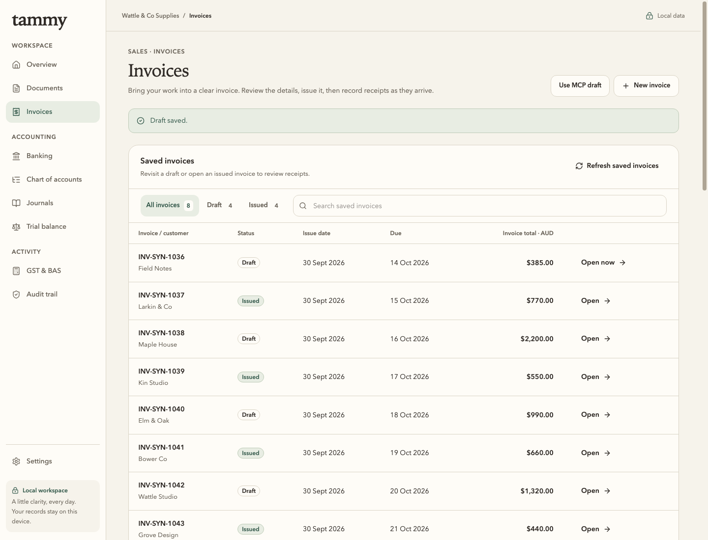
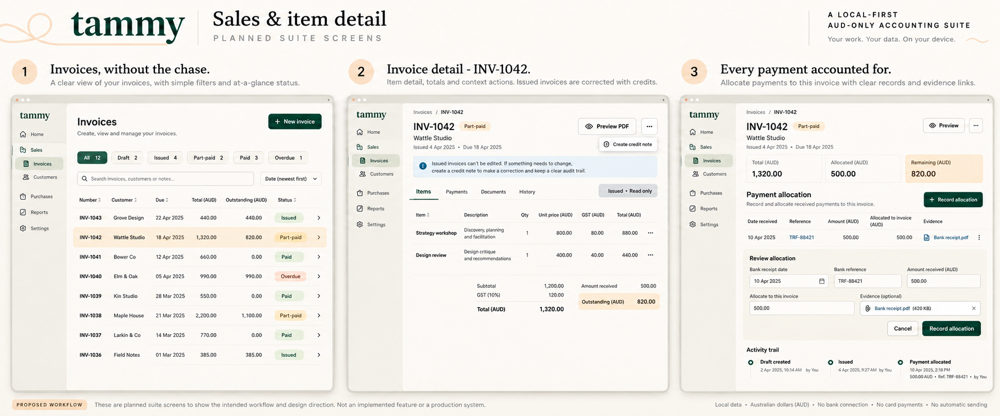
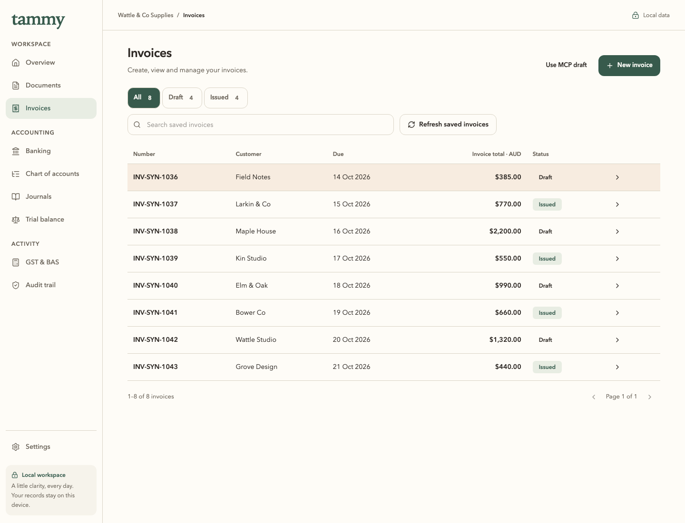

Before · real app

Reference · board 07, left window

After · real app

Before and after use the same eight synthetic records at 1440 × 1100. The reference is a generated concept; its left app window is uniformly normalized into that viewport for composition review. It is not a runtime capture or a pixel-perfect baseline. Open each original for full resolution.



Remaining separate work: editor/detail composition against board 07 panels 2/3 and board 02. No sending, stock or payment gateway is implied. The original failed narrow attempt remains archived alongside these captures.